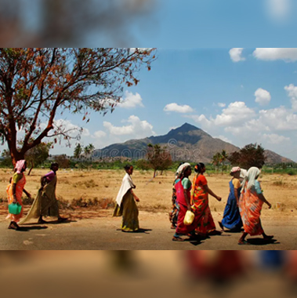

Research that moves ideas forward.
Evidence that inspires better decisions


Loading
Research that moves ideas forward.
We work across different populations, settings and programme stages from understanding a need to evaluating what changed, what worked, and what can be strengthened.
Evaluating implementation to understand how a large-scale school nutrition programme reaches children on the ground.

Understanding how persons with disabilities and caregivers access, understand and use information about government welfare schemes.
Assessing what primary healthcare facilities need to strengthen service delivery for rural communities.

Turning routine programme data into a clearer picture of nutrition support, coverage and implementation.

Understanding healthcare access and community needs before expanding rural health services.

Needs & Strengths Assessment of NGOs Supporting Neurodivergent Individuals. Understanding where organisations need stronger systems, skills and resources.

Making the science of salt, sodium and NCD risk easier to understand — and easier to act on.
Following maternal and child health interventions from programme delivery to beneficiary-level evidence.

Building the skills and systems needed to use research more effectively. Evidentia designs and delivers practical learning programmes for researchers, organisations and programme teams.

Translating evidence on adolescent anaemia into practical nutrition education modules.

Understanding whether healthier retail food environments can support better nutrition choices among tea-estate communities in Coonoor, Nilgiris.
Different questions require different methods. Our work combines five key steps:
Needs, context, people and systems
Tools, frameworks and research approaches
Field data, stakeholder perspectives and evidence
Quantitative and qualitative evidence
Findings into practical recommendations
Our portfolio spans critical development sectors across India and global settings.
Whether you need to understand a community, assess a programme, strengthen implementation or generate evidence for a decision, let's start with the question.